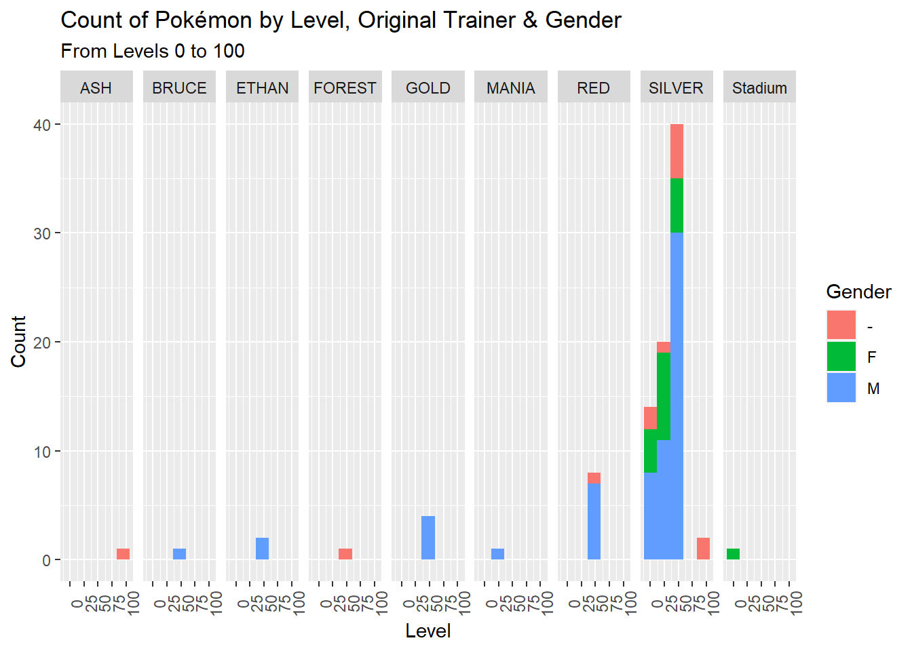

3 Example Data Visualizations
This section is going to outline all of the visualizations I can think of that can give further context to the data we have on hand. While also giving insight to the line of thinking needed to ascertain what visualization method is best suited for a given use case.
3.1 One variable, discrete variables
ggplot(CrystalBox, aes(y = Gender, fill = OT)) +
geom_bar() +
xlim(0,10) +
xlab("Count") +
ylab("1st Type") +
ggtitle("Gender of Pokémon by Type & Original Trainer") +
theme_light() +
facet_wrap(Type1 ~ .)ggplot(CrystalBox, aes(y = HeldItem, fill = OT)) +
geom_bar() +
ggtitle("Held Items by Sex & Original Trainer") +
xlab("Count") +
ylab("Item") +
facet_wrap(Gender ~ .)ggplot(CrystalBox, aes(x = Gender, fill = OT)) +
geom_bar() +
ggtitle("# of Pokémon by Sex and Original Trainer") +
xlab("Sex") +
ylab("Count")#One variable, continuous
ggplot(CrystalBox, aes(x = Level, fill = Gender)) +
geom_histogram(bins = 5, position = "stack") +
ggtitle("Count of Pokémon by Level, Original Trainer & Gender",
subtitle = "From Levels 0 to 100") +
ylab("Count") +
theme(axis.text.x = element_text(angle = 90),
axis.text.y = element_text(angle = 0)) +
facet_grid(cols = vars(OT))
…
3.2 Two variable plots
#Ver. 1
ggplot(CrystalBox, aes(x = OT, y = Level, color = EXP)) + geom_count() +
ggtitle("Level of Pokémon by Original Trainer",
subtitle = "w/ Experience Points") +
xlab("Original Trainer") +
theme_minimal() #Ver. 2 — Using Facet Wrap
gender.labs <- c("Genderless", "Male", "Female")
names(gender.labs) <- c("Genderless", "M", "F")
ggplot(CrystalBox, aes(x = Level, y = OT, color = EXP)) + geom_count() +
ggtitle("Level of Pokémon by Original Trainer",
subtitle = "w/ Experience Points") +
xlab("Level") +
ylab("Original Trainer") +
theme_linedraw() +
facet_wrap(Gender ~ ., labeller = labeller(Gender = gender.labs))ggplot(CrystalBox, aes(x = Level, y = ..density.., fill = OT)) +
geom_histogram(bins = 6) +
geom_density(kernel = "gaussian") +
ggtitle("Boxed Pokémon Levels & Density by Original Trainer") +
scale_fill_discrete(name = "Trainer") +
xlab("Level") +
ylab("Density") +
theme_light()ggplot(CrystalBox, aes(x = StatTotals, y = after_stat(density), fill = OT)) +
geom_histogram(bins = 6) +
geom_density(kernel = "gaussian") +
theme(axis.title.x = element_text(face = "bold",
margin = margin(t = 0, r = 0, b = 10, l = 0)),
axis.title.y = element_text(face = "bold",
margin = margin(t = 0, r = 10, b = 0, l = 0))) +
ggtitle("Boxed Pokémon Total Stats & Density by Original Trainer") +
scale_fill_discrete(name = "Trainer") +
xlab("Total Stats") +
ylab("Density") +
theme_light()…
3.3 Sample violin plot, with quantiles.
ggplot(CrystalBox, aes(x = Level, y = StatTotals)) +
geom_violin(draw_quantiles = c(0.25, 0.50, 0.75), trim = FALSE) +
xlim(0,100) +
ylab("StatTotals") +
ggtitle("Stat Totals by Level") +
coord_flip()…
3.4 Line graphs showing correlation between Hit points and offensive stats by level
ggplot(CrystalBox, aes(x = HP, y = ATK, size = Level)) +
geom_point() +
geom_line(linewidth = 1, color = "sky blue") +
xlab("Hit Points") +
ylab("Attack") +
scale_x_continuous(breaks = scales::pretty_breaks(n = 20)) +
scale_y_continuous(breaks = scales::pretty_breaks(n = 15)) +
ggtitle("Hit Points by Attack stat and Level") +
theme(axis.text.x = element_text(face = "bold"),
axis.text.y = element_text(face = "bold"),
axis.title.x = element_text(face = "bold",
margin = margin(t = 8, r = 10, b = 0, l = 0)),
axis.title.y = element_text(face = "bold",
margin = margin(t = 0, r = 10, b = 0, l = 0)),
axis.line = element_line(colour = "black",
linewidth = 1, linetype = "solid")) ggplot(CrystalBox, aes(x = HP, y = SPA, size = Level)) +
geom_point() +
geom_line(linewidth = .75, color = "red") +
xlab("Hit Points") +
ylab("Special Attack") +
scale_x_continuous(breaks = scales::pretty_breaks(n = 20)) +
scale_y_continuous(breaks = scales::pretty_breaks(n = 15)) +
ggtitle("Hit Points by Special Attack stat and Level") +
theme(axis.text.x = element_text(face = "bold"),
axis.text.y = element_text(face = "bold"),
axis.title.x =
element_text
(face = "bold", margin = margin(t = 8, r = 10, b = 0, l = 0)),
axis.title.y =
element_text
(face = "bold", margin = margin(t = 0, r = 10, b = 0, l = 0)),
axis.line = element_line(colour = "black",
linewidth = 1, linetype = "solid")) 3.4.1 Different graphs showing correlation between offensive stats and speed
ggplot(CrystalBox, aes(x = ATK, y = SPE, color = Gender)) +
ggtitle("Attack and Speed by Type") +
xlab("Attack") +
ylab("Speed") +
theme(axis.text.x = element_text(angle = 30),
axis.text.y = element_text(angle = 30)) +
geom_jitter() +
geom_point() +
scale_fill_continuous(type = "viridis") +
geom_smooth(method = lm, se = FALSE)## `geom_smooth()` using formula = 'y ~ x'ggplot(CrystalBox, aes(x = SPA, y = SPE, color = Gender)) +
geom_jitter() +
xlab("Special Attack") +
ylab("Speed") +
ggtitle("Speed by Special Attack Stats and Gender") +
geom_smooth(method = lm, se = FALSE) +
theme(axis.text.x = element_text(angle = 30),
axis.text.y = element_text(angle = 30)
)## `geom_smooth()` using formula = 'y ~ x'#Attack and Speed density plot
ggplot(CrystalBox, aes(x = ATK, y = SPE)) +
ggtitle("Density of Attack by Speed Stats") +
xlab("Attack") +
ylab("Speed") +
stat_density_2d(aes(fill = ..density..), geom = "raster", contour = FALSE) +
scale_fill_distiller(palette = 4, direction = -1) +
scale_x_continuous(expand = c(0, 0)) +
scale_y_continuous(expand = c(0, 0)) +
theme(
legend.position = 'none',
axis.title.x = element_text(margin = margin(
t = 8,
r = 10,
b = 0,
l = 0
)),
axis.title.y = element_text(margin = margin(
t = 0,
r = 10,
b = 0,
l = 0
)),
)3.4.2 Heatmap
I’ll admit, making a heatmap using base R was a lot more difficult than I realized. So much has to go into properly formatting whatever you’re putting in the x axis if your data isn’t properly aggregated. If you’re looking to make more nuanced heatmaps(), I recommend heatmap2() and pheatmap().
Firstly, you have to make sure all the variables you’re putting into the heatmap are numeric, due to the design of how the chart works. So if you have variables that are non-numeric like character-based columns that you want to have accounted for, you’ll need to make counts for each instance and then coalesce them into the main data set you want to chart. I digress.
Here we go!
# Subset main dataset
CrystalBoxHM <- subset(CrystalBox[,c(3:4,9:10,12:17,19,21:31)])
# Edit the source data set for use with the heatmap, as heatmaps can only be used with matrices containing
# numeric variables #Replace NAs with blank spaces for sum functions below
CrystalBoxHM[,2] <-
replace(CrystalBoxHM$Type2,is.na(CrystalBoxHM$Type2),"")
#Make Type columns
CrystalBoxHM2 <- unique( CrystalBoxHM[ , 1 ] )
CrystalBoxHM2 <- as.data.frame(CrystalBoxHM2)
CrystalBoxHM2$Type2 <- NA
colnames(CrystalBoxHM2) <- c("Type1", "Type2")
CrystalBoxHM2$Type2 = CrystalBoxHM2$Type1 #Run first
CrystalBoxHM2 <- CrystalBoxHM2 %>% add_row(Type1 = "Flying")
CrystalBoxHM2$Type2 = CrystalBoxHM2$Type1 #Run again
#See above, since the main data set doesn't account for Flying types in Type 1 as they're no pure Flying types in all of Pokémon.
#Make counts of Type 1 & 2 columns
CrystalBoxHM2$Type1_Count <-
sapply(CrystalBoxHM2[,1], function(string)
sum(string == CrystalBoxHM[,1]))
CrystalBoxHM2$Type2_Count <-
sapply(CrystalBoxHM2[,2], function(string)
sum(string == CrystalBoxHM[,2]))
#Edit row names for heatmap
row.names(CrystalBoxHM2) <- c("Psychic", "Bug", "Normal", "Fire",
"Ground", "Water", "Electric",
"Poison", "Dragon", "Ice", "Dark",
"Fighting", "Rock", "Steel", "Grass",
"Ghost", "Flying")
#Make other columns for the matrix that the heatmap will be based on...
#Make Type counts for the other data set we subsetted originally:
CrystalBoxHM$Type1_Count <-
sapply(CrystalBoxHM[,1], function(string)
sum(string == CrystalBoxHM[,1]))
CrystalBoxHM$Type2_Count <-
sapply(CrystalBoxHM[,2], function(string)
sum(string == CrystalBoxHM[,2]))
#Splitting data, merging new datasets, summarizing and subsetting:
Type1_meanEXP <-
CrystalBoxHM %>% group_by(Type1) %>% summarize(mean_EXP = mean(EXP))
Type1_meanEXP <-
Type1_meanEXP %>% remove_rownames %>%
column_to_rownames(var = "Type1") %>% as.data.frame()
meanEXP2 <- merge(CrystalBoxHM2, Type1_meanEXP, by = 0, all = TRUE)
meanEXP2 <-
meanEXP2 %>% remove_rownames %>%
column_to_rownames(var = "Row.names") %>% as.data.frame()
#Note above that we must change the row names to the types that will display in the heatmap, because remember, heatmaps can only be used with dataset that contain columns with only numeric properties. Row names are not affected by this.
#Merge and null unneeded columns
meanEXP2[,1:2] <- NULL
#New data with all the means we need
all_means <- subset(CrystalBoxHM, select = c(Type1:Type2, Level, HP:SPE))
all_means[, 10:16] <- colMeans(x = all_means[, 3:9])
all_means[, 3:9] <- NULL
#Rename rows to proper averages:
all_means <- all_means %>%
rename(
Level_Avg = V10,
HP_Avg = V11,
ATK_Avg = V12,
DEF_Avg = V13,
SPA_Avg = V14,
SPD_Avg = V15,
SPE_Avg = V16
)
#Re-summarise all the means in our group
all_means <-
all_means %>% group_by(Type1) %>% summarise_all(mean)
all_means[, 2] <- NULL
all_means <-
all_means %>% remove_rownames %>% column_to_rownames(var = "Type1") %>% as.data.frame()
#Merge everything and fix row names:
meanEXP2 <- merge(meanEXP2, all_means, by = 0, all = TRUE)
meanEXP2 <-
meanEXP2 %>% remove_rownames %>% column_to_rownames(var = "Row.names") %>%
as.data.frame()
CrystalBoxHM3 <- meanEXP2 #I renamed the merged dataset to maintain consistency. #The heatmap itself
par(cex.main = .85)
heatmap(as.matrix(x = CrystalBoxHM3), scale="col",
margins = c(6, 6),
Colv = NA,
na.rm = TRUE,
main = "Aggregations by Type",
xlab= "Aggregates",
ylab= "Type",
cexCol=.75, col = cm.colors(256))#Note how I edited the code to remove the column dendrogram from the chart.